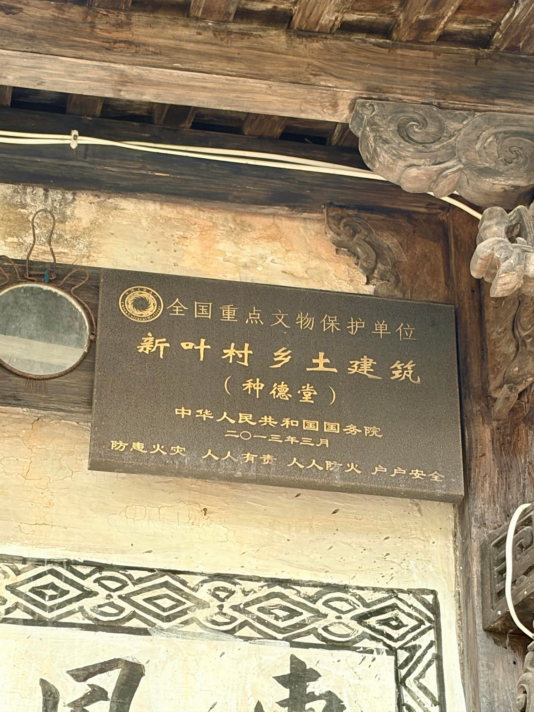

国保传统民居
院落规整，起居有序种德堂
种德堂是全国重点文物保护单位“新叶村乡土建筑”中的一座传统民居。它在成片老宅之间保留着较为完整的宅院平面，是观察新叶传统居住尺度的一处代表。
01
核心地段的一座宅院

种德堂占地约四百零三平方米，宅院平面保存较为完整。在新叶村紧密相连的民居中，这样一处尺度清晰、格局连贯的宅院，让人更容易理解传统家庭如何在有限村落空间中安排居住与日常生活。

种德堂是全国重点文物保护单位“新叶村乡土建筑”中的一座传统民居。它在成片老宅之间保留着较为完整的宅院平面，是观察新叶传统居住尺度的一处代表。

种德堂占地约四百零三平方米，宅院平面保存较为完整。在新叶村紧密相连的民居中，这样一处尺度清晰、格局连贯的宅院，让人更容易理解传统家庭如何在有限村落空间中安排居住与日常生活。